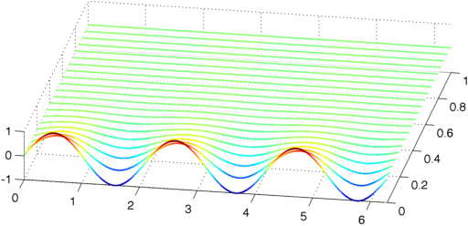
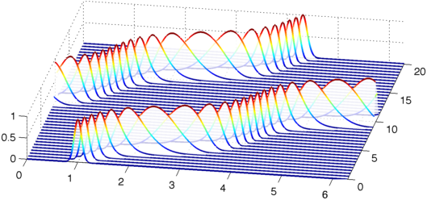

LW = 'linewidth'; dom = [0 2*pi];
Consider the time-dependent PDE
$$ u_t = \mathcal{L}u, $$
on $[0,2\pi]\times[0,\infty)$, with a given periodic initial condition $u(x,0)$. We seek periodic solutions $u(x,t)$. If the operator $\mathcal{L}$ is semi-bounded, this problem is well-posed [1], and the unique solution is given by
$$ u(x,t) = e^{\mathcal{L}t}u(x,0). $$
Two examples of well-posed problems are the heat equation, $\mathcal{L}u=u_{xx}$, and the convection equation, $\mathcal{L}u=c(x)u_x$.
Consider first the heat equation
$$ u_t = u_{xx}, $$
on $[0,2\pi]\times[0, 1]$, with periodic boundary conditions, and initial condition $u(x,0)=\sin(3x)$. We can solve it in Chebfun as follows with the expm command.
T = 1; dt = 0.05; t = [0:dt:T]; L = chebop(@(u) diff(u, 2), dom); L.bc = 'periodic'; u0 = chebfun(@(x) sin(3*x), dom); u = expm(L, t, u0); figure, waterfall(u, t, LW, 2) view(10, 70), axis([0 2*pi 0 T -1 1])

The diffusion has done its job: the solution at $T=1$ has very small amplitude.
norm(u{end}, inf)
ans =
1.234098040882596e-04
Let us solve now the convection equation
$$ u_t = c(x)u_x, $$
on $[0,2\pi]\times[0, 20]$, with $c(x)= -\frac{1}{5}-\sin^2(x-1)$, periodic boundary conditions, and initial condition $u(x,0)=\exp(-100(x-1)^2)$.
T = 20; dt = 0.5; t = [0:dt:T]; c = chebfun(@(x) -(1/5 + sin(x-1).^2), dom); L = chebop(@(x,u) c.*diff(u, 1), dom); L.bc = 'periodic'; u0 = chebfun(@(x) exp(-100*(x-1).^2), dom); u = expm(L, t, u0); figure, waterfall(u, t, LW, 2) view(10, 70), axis([0 2*pi 0 T 0 1])

This example from [2] shows the propagation of the initial condition at variable speed, which remains coherent and clean.
References
-
J. S. Hesthaven, S. Gottlieb, and D. Gottlied, Spectral Methods for Time-Dependent Problems, Cambridge University Press, New York, 2007.
-
L. N. Trefethen, Spectral Methods in MATLAB, SIAM, Philadelphia, 2000.